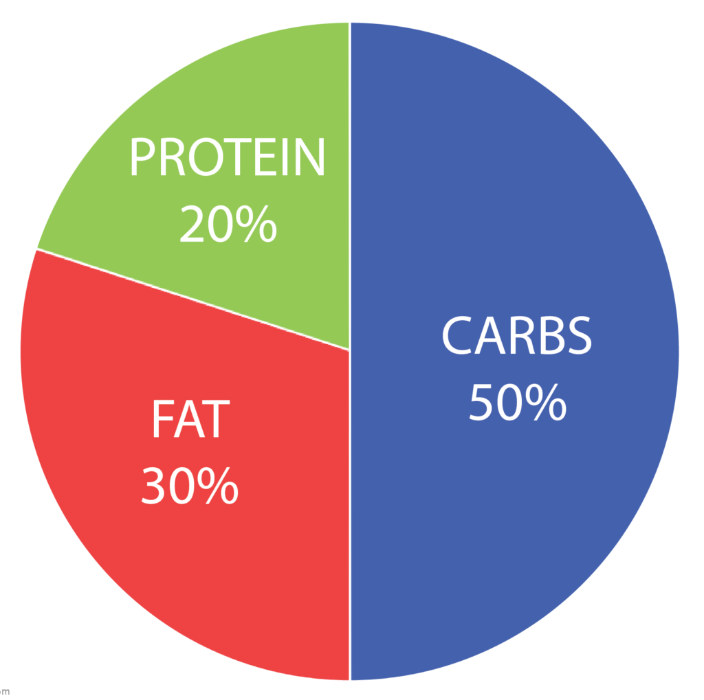

<div style="width: 109%;">
<h1>Macros Cheat Sheet</h1>


<!--<div class="vertical-menu">-->
  <select name="forma" onchange="location = this.value;">
    <option value="#" class="active">Protein</option>
    <option value="https://www.allrecipes.com/recipes/659/meat-and-poultry/chicken/chicken-breasts/" target="_blank">Chicken Breast</option>
    <option value="https://www.epicurious.com/expert-advice/dessert-recipes-with-egg-whites-gallery" target="_blank">Egg whites</option>
    <option value="https://www.delish.com/cooking/g26001696/tofu-recipes/" target="_blank">Tofu</option>
    <option value="https://www.mensjournal.com/food-drink/best-healthy-lean-beef-recipes/" target="_blank">Lean Beef</option>
    <option value="https://paleogrubs.com/bison-recipes" target="_blank">Bison</option>
    <option value="https://www.thedailymeal.com/best-recipes/turkey-bacon" target="_blank">Turkey Bacon</option>
    <option value="protein.component.html" target="_blank">Protein Powders</option>
    <option value="https://www.goodhousekeeping.com/food-recipes/g4212/best-greek-yogurts/" target="_blank">Non-Fat Greek Yogurt</option>
  </select>


<select name="forma" onchange="location = this.value;">
  <option value="#" class="active">Carbs</option>
  <option value="https://www.modernhoney.com/best-homemade-one-hour-whole-wheat-bread/" target="_blank">Whole Wheat Bread</option>
  <option value="https://www.tasteofhome.com/collection/healthy-brown-rice-recipes/" target="_blank">Brown Rice</option>
  <option value="https://fitfoodiefinds.com/the-50-best-oatmeal-recipes-on-the-planet/" target="_blank">Oatmeal</option>
  <option value="https://www.cookinglight.com/food/in-season/cooking-with-corn" target="_blank">Corn</option>
  <option value="https://www.healthline.com/nutrition/20-healthiest-fruits" target="_blank">Fruits</option>
  <option value="https://cookieandkate.com/category/food-recipes/salads/" target="_blank">Veggies</option>
  <option value="https://www.cookinglight.com/cooking-101/essential-ingredients/healthy-squash-zucchini-recipes" target="_blank">Squash</option>
  <option value="https://bodynutrition.org/maple-syrup/" target="_blank">Maple Syrup</option>
  <option value="https://www.acouplecooks.com/delicious-sweet-potato-recipes/" target="_blank">Sweet Potato</option>
</select>
<select name="forma" onchange="location = this.value;">
  <option value="#" class="active">Fats</option>
  <option value="https://www.loveandlemons.com/avocado-recipes/" target="_blank">Avacado</option>
  <option value="https://www.ambitiouskitchen.com/ak-round-up-10-homemade-nut-butter-recipes/" target="_blank">Nut Butter</option>
  <option value="https://time.com/5342337/best-worst-cooking-oils-for-your-health/" target="_blank"> Oils </option>
  <option value="https://www.healthline.com/nutrition/9-healthy-nuts#:~:text=In%20general%2C%20nuts%20are%20good,including%20magnesium%20and%20vitamin%20E." target="_blank">Nuts</option>
  <option value="https://www.cookinglight.com/food/recipe-finder/goat-cheese-recipes" target="_blank">Goat Cheese</option>
</select>
<select name="forma" onchange="location = this.value;">
  <option value="#" class="active">Protein+Carbs</option>
  <option value="https://www.tasteofhome.com/collection/quinoa-recipes/" target="_blank">Quinoa</option>
  <option value="https://recipes.sparkpeople.com/great-recipes.asp?food=skim+milk" target="_blank">Skim milk</option>
  <option value="https://www.allrecipes.com/recipes/17672/ingredients/whole-grains/buckwheat/" target="_blank">Buckwheat</option>
  <option value="https://www.goodhousekeeping.com/food-recipes/healthy/g32186454/lentil-recipes/" target="_blank">Lentil</option>
  <option value="https://www.thekitchn.com/25-easy-recipes-to-make-with-a-can-of-chickpeas-234833" target="_blank">Chickpeas</option>
</select>

<select name="forma" onchange="location = this.value;">
  <option value="#" class="active">Protein+Fats</option>
  <option value="https://www.brit.co/duck-dinner-recipes/" target="_blank">Duck</option>
  <option value="https://www.livingchirpy.com/10-healthy-recipes-with-bacon/" target="_blank">Bacon</option>
  <option value="https://quickasianrecipes.com/healthy-egg-recipes-for-weight-loss/" target="_blank">Whole Eggs</option>
  <option value="https://www.self.com/gallery/delicious-ways-to-eat-cottage-cheese" target="_blank">Cottage Cheese</option>
  <option value="https://www.tasteofhome.com/collection/50-healthy-salmon-recipes/" target="_blank">Salmon</option>
</select>

<select name="forma"onchange="location = this.value;">
  <option value="#" class="active">Carbs+Protein+Fats</option>
  <option value="protein.component.html" target="_blank">Protein Bars</option>
  <option value="http://www.eatingwell.com/recipes/19239/ingredients/nuts-seeds/flax-seed/" target="_blank">Flax seeds</option>
  <option value="https://www.bonappetit.com/gallery/chia-seed-recipes" target="_blank">Chia Seeds</option>
  <option value="https://www.wellandgood.com/good-food/edamame-recipes/" target="_blank">Edamame</option>
</select>
</div>

